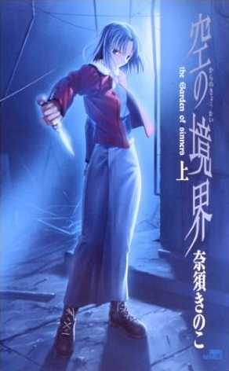
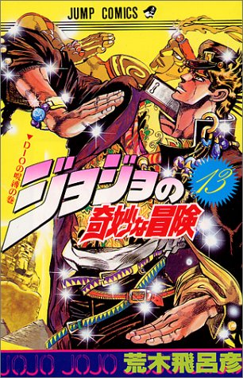

Listado de Libros
- Kara no Kyoukai: Al Borde del Vacío
- Un Cierto Índice Mágico
- Las Bizarras Aventuras de JoJo
| Título | Autor | Año | Portada |
|---|---|---|---|
| Kara no Kyoukai: Al Borde del Vacío | Kinoko Nasu | 1998 |  |
| Un Cierto Índice Mágico | Kazuma Kamachi | 2004 | |
| Las Bizarras Aventuras de JoJo | Hirohiko Araki | 1986 |  |